Typography & Change
Type as a Medium for Storytelling
A Booklet Exploring the Boundaries of Typography
I designed this booklet in Adobe InDesign, which delves into how young typographers are using type as a medium for visual storytelling. It highlights the work of Tré Seals and his type foundry Vocal Type Co., which creates typefaces inspired by minority cultures and historical movements. It also explores designer Beatriz Lozano's boundary-pushing typefaces that incorporate AR and other technologies. The booklet showcases these designers' unique approaches to storytelling and experimentation in the typography world. Whether it's using type to drive curiosity, explore new technologies, or address social issues, these designers transform letters from fundamental symbols to immersive experiences.
Adobe Booklet Mockups
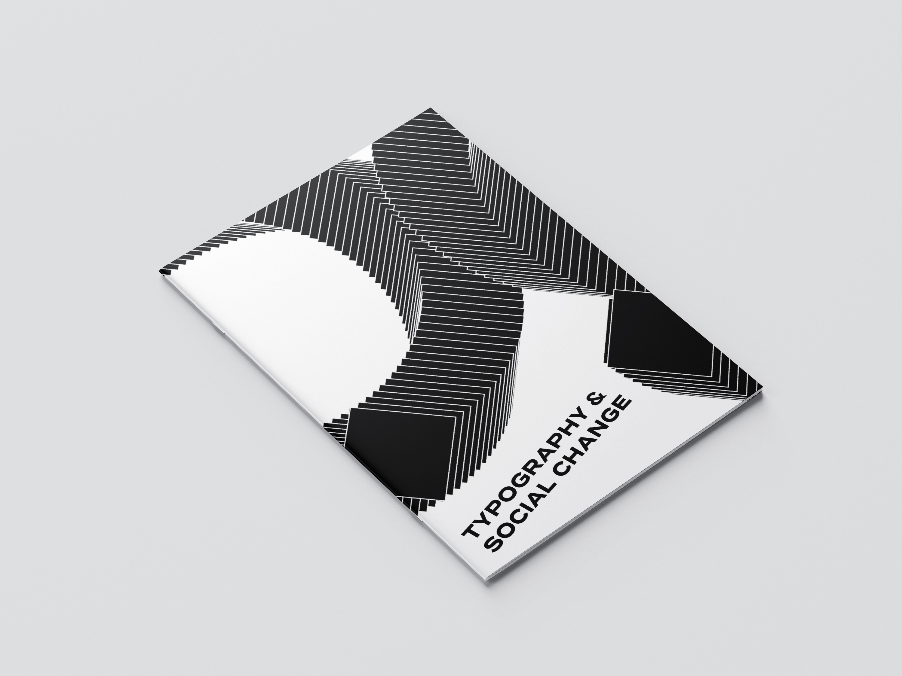
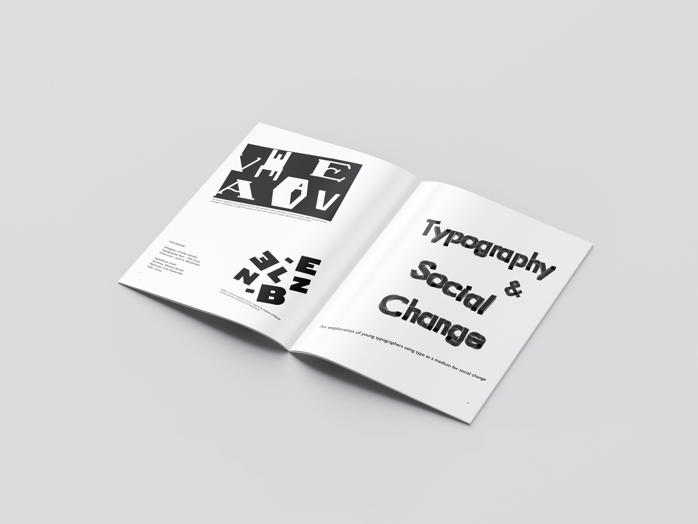
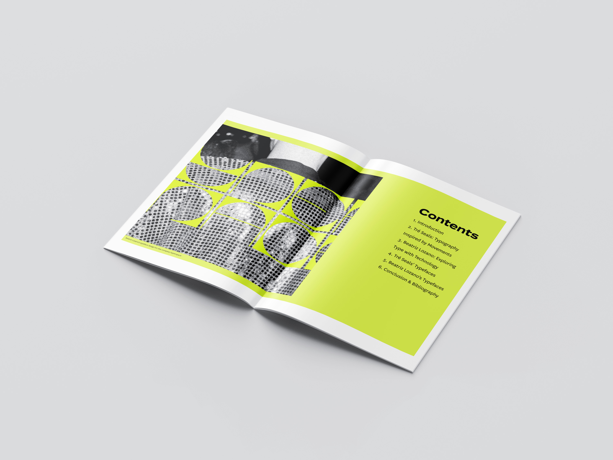
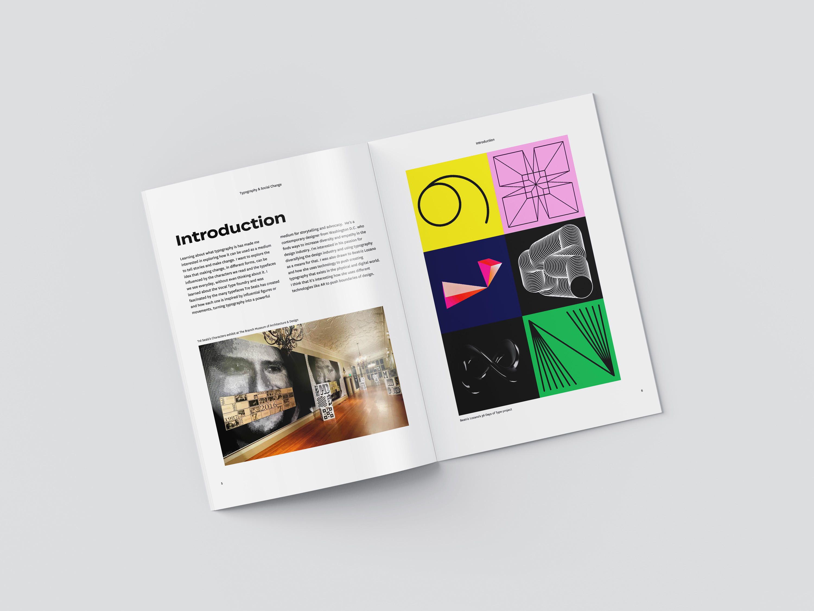
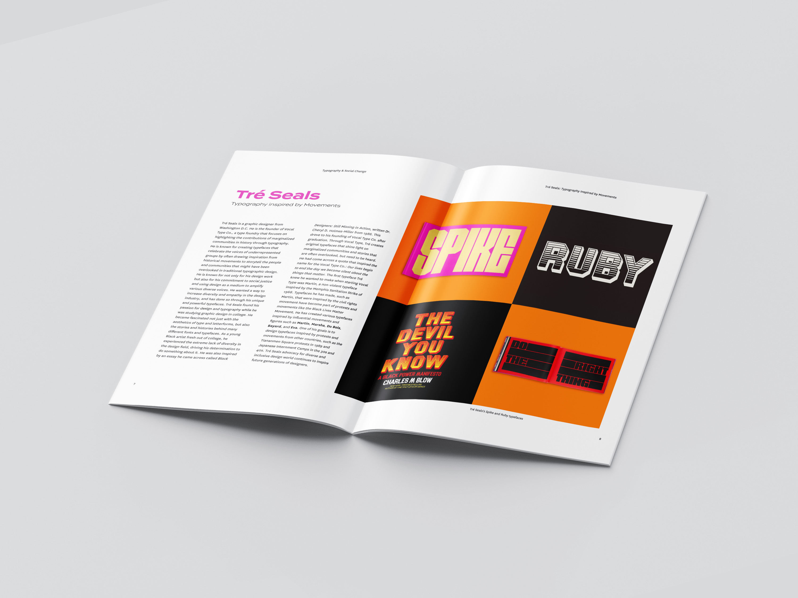
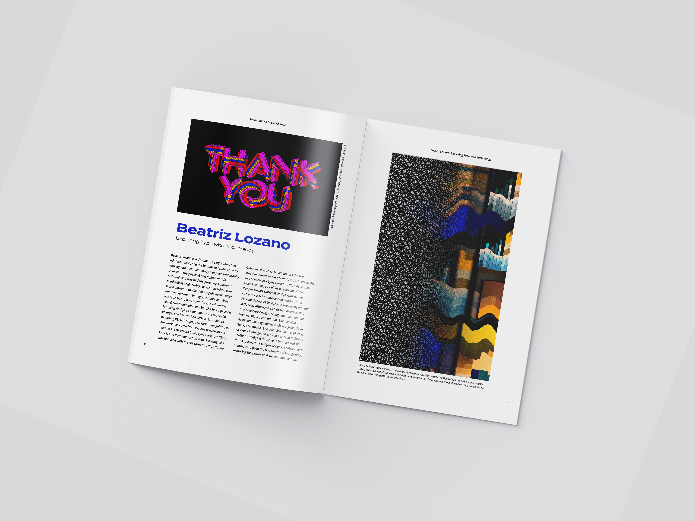
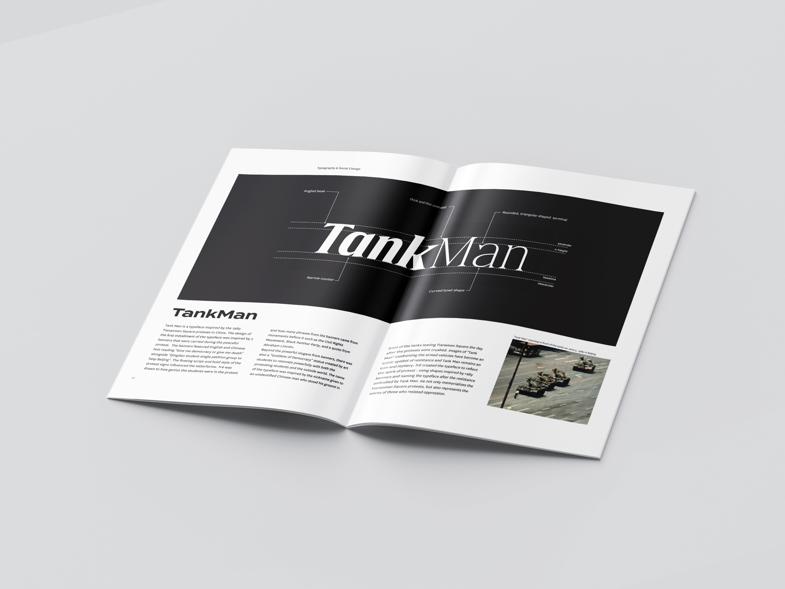
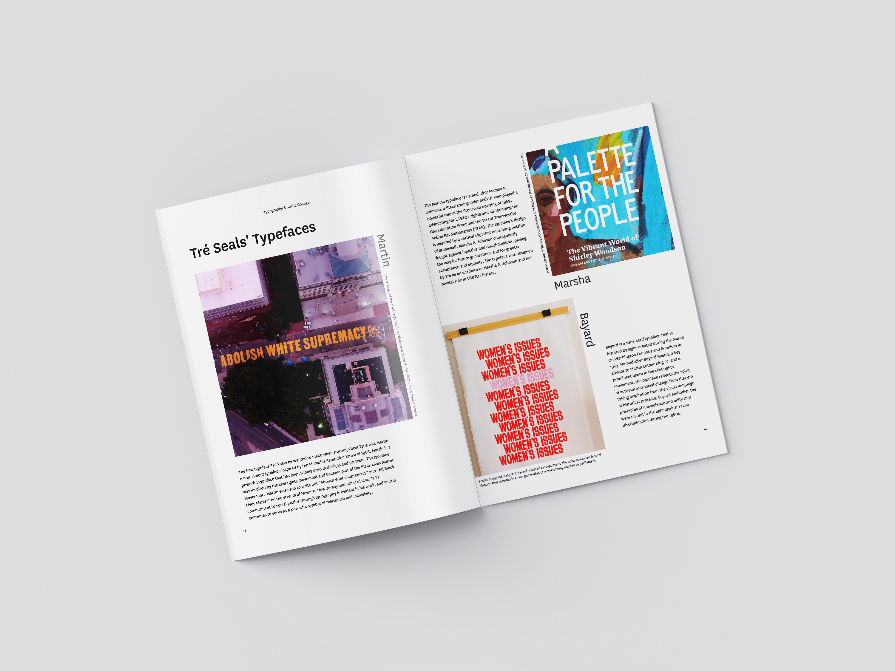
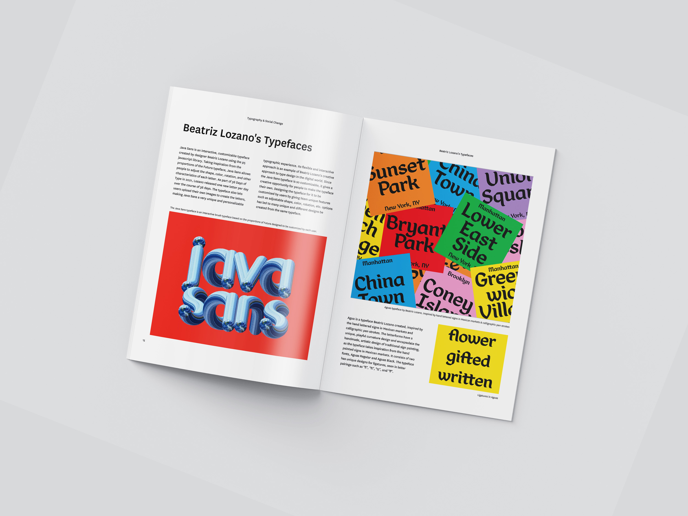
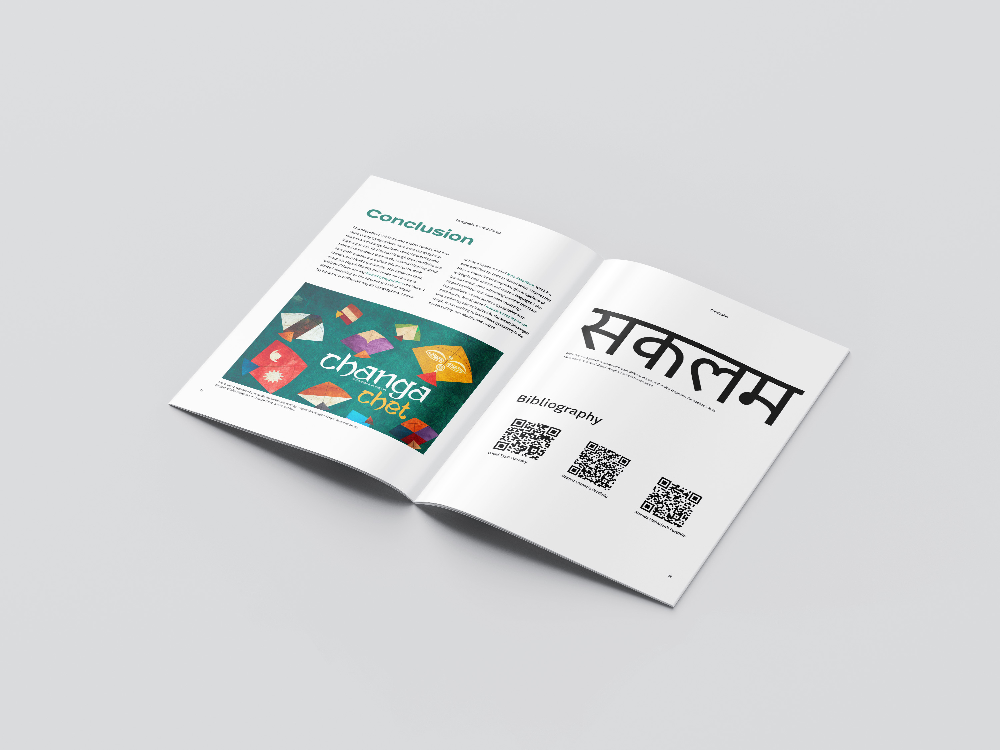
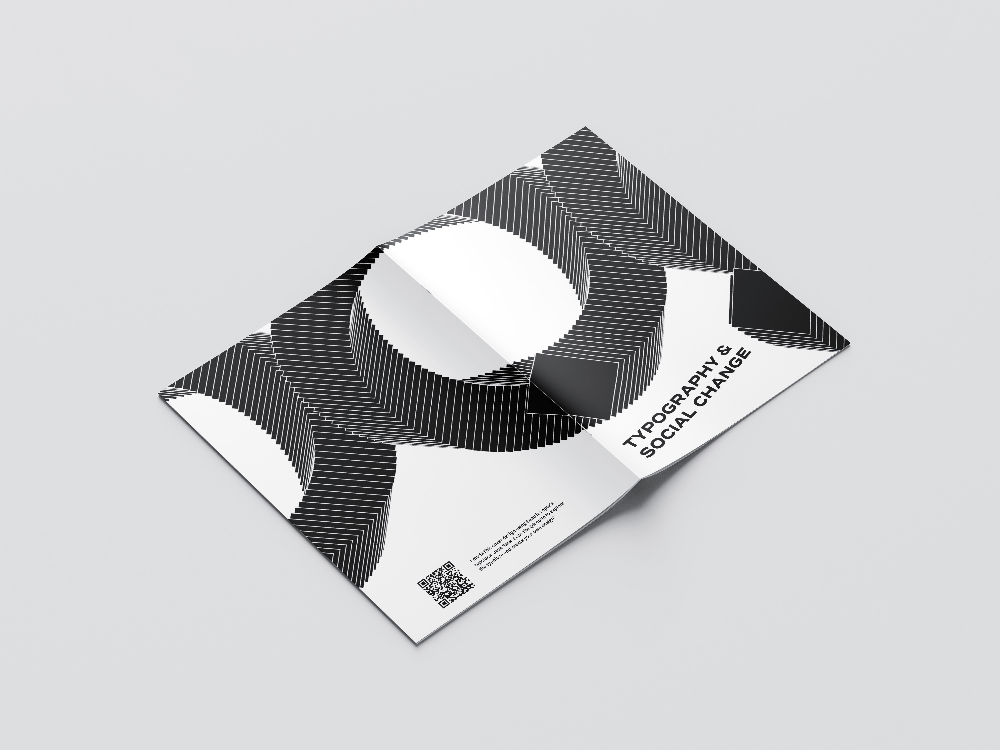
Design Process
Creating Sketches before Indesign